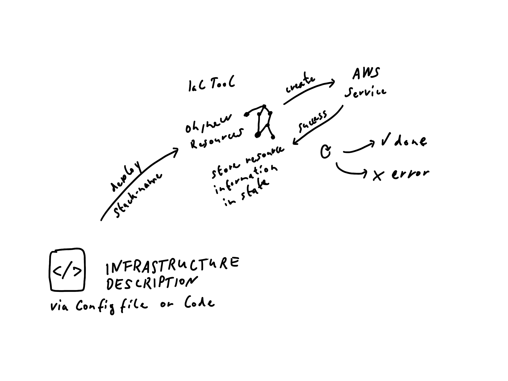

Infrastructure as Code (IaC) in AWS
About me
I'm Florian Wiech 👋
3 years @ codecentric AG
Topics of interest: JavaScript Ecosystem & Public Cloud Infrastructure
https://florian.page
https://github.com/florianwiech
Agenda
- IaC Basics
-
IaC Tools
- AWS CloudFormation
- aws-cdk
- Terraform
- Architecture discussions
IaC Basics
Stack creation

Stack update